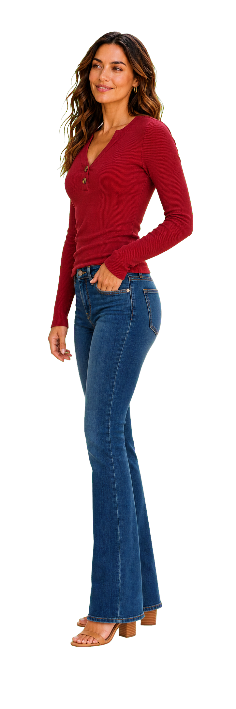
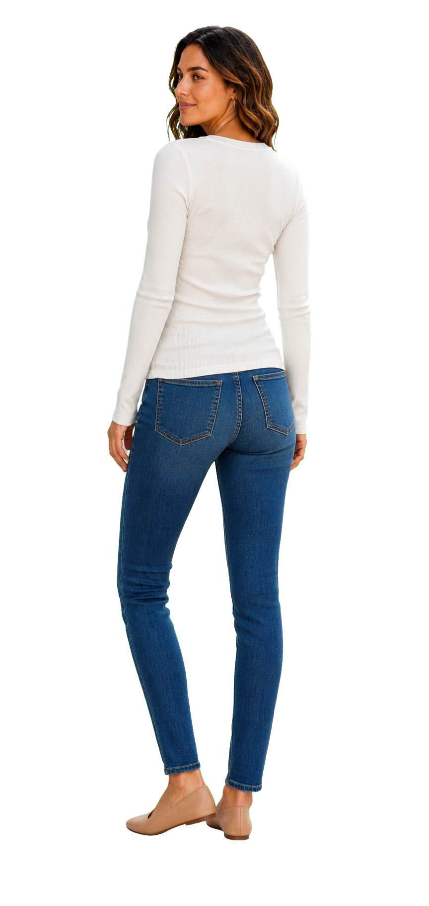
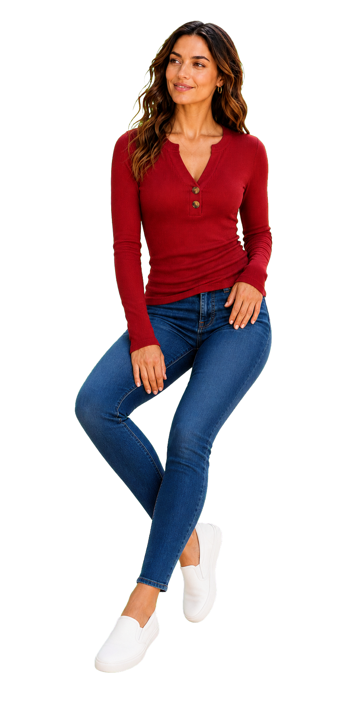
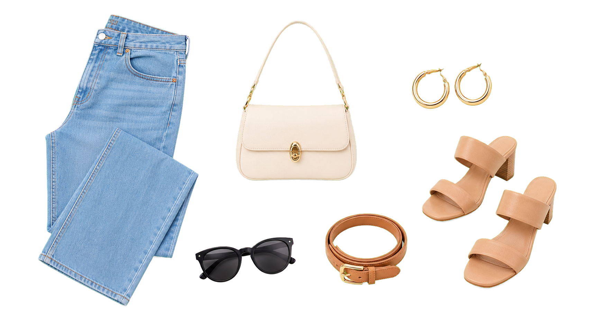

GOING OUT
OOTD
Style It Your Way
Outfit
Notes
Notes
Wear it tucked, layered, or relaxed. The slim ribbed shape keeps the look neat for everyday plans.
side view keeps the slim rib fit readable


Layer Ready
#OOTD
S I D E V I E W
Find Your Everyday Shade
Color
Story
Story
Choose a grounded neutral or rich seasonal tone. Each shade keeps the same neckline, buttons, and ribbed texture.
front, back, and seated views keep the story moving




#COLOR DROP
F I V E S H A D E S
Tuck or Layer
Five Colors
Easy Denim Pairing